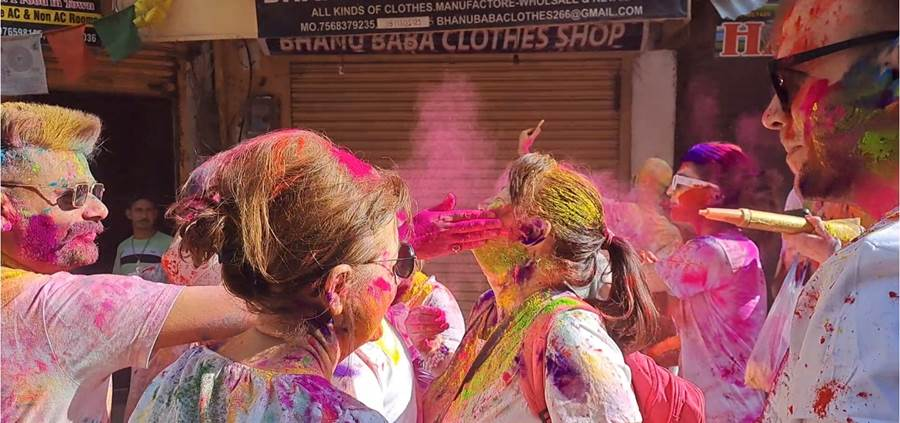
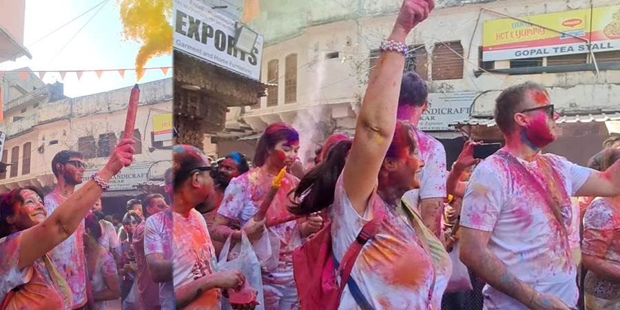
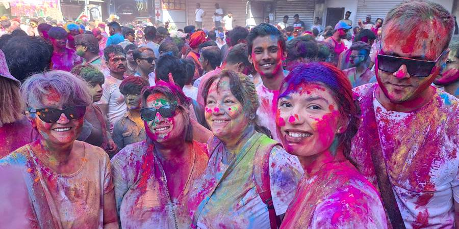
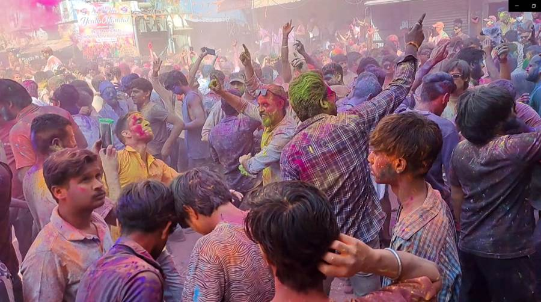
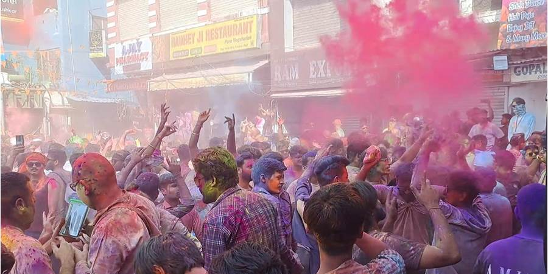
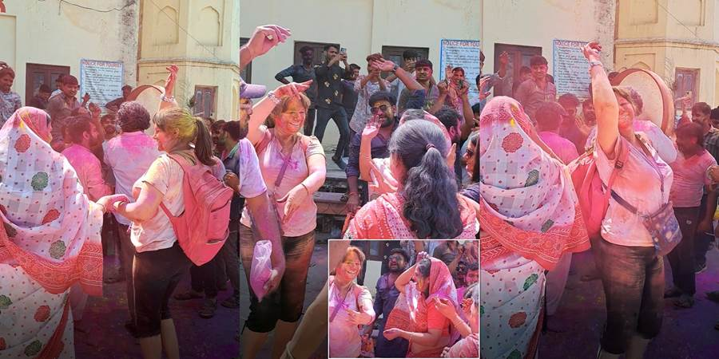
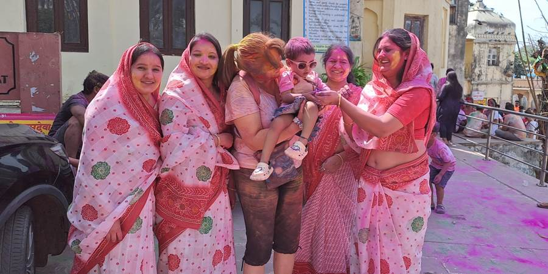
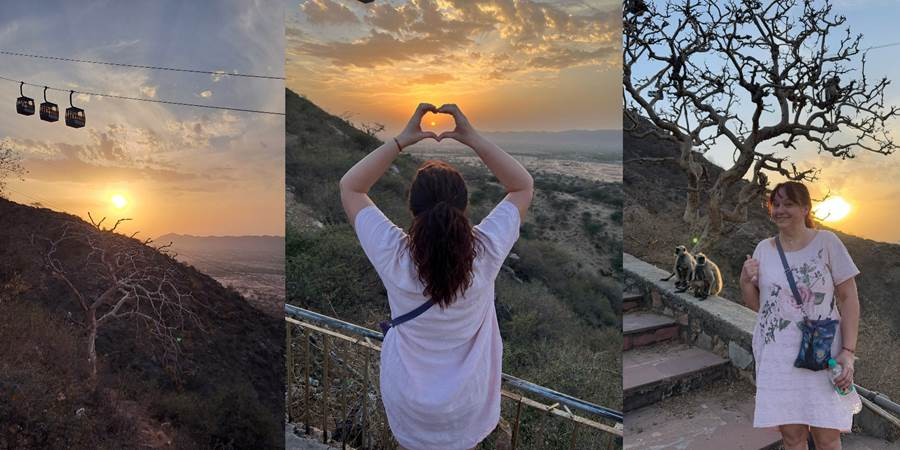
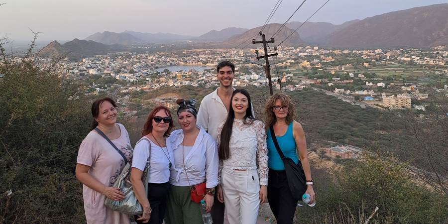

Četvrti dan, Holi u Puškaru: Sve mi boje dobro stoje
Holi je festival za doček Proleća, odlazak loše karme i dolazak nove dobre, festival boja. Razlog zašto mnogi dolaze u Indiju. Razlog zašto smo mi došli u Puškar. Proslavlja se u celoj Indiji ali kažu da je poseban u Puškaru. Meni bi bilo interesantnije da smo išli u onaj grad gde žene biju muškarce za Holi ali nismo. Ustvari, mlate ih drškama od metle po štitovima. Muški kleknu i zaštite glavu štitom a one udri. Ima žena koje se baš prime, koliko sam videla na snimcima. Ponekog nepripremljenog zviznu i po leđima.
U dvorištu hotela smo svi namazali jedne druge bojama koje smo kupili i to onim koje se lako peru, naivno misleći, to je otprilike to. I otišli u grad. Kreće Happy Holi. Bukvalno svi koji prolaze požele ti Happy Holi i namažu te po obrazu, bude tu i po kosi, ustima. Mlađe su dobile i po guzi.
 Baca se boja u vis. U centru ko u transu, svi obojeni, svi plešu, mažu, bacaju boje. Na bini je neki orkestar koji lupa u velike doboše. Neverovatan doživljaj. Koliko sam videla u centru su uglavnom svi muškarci i to Indijci. Mi smo bile bezbedne u našoj grupi ali kad sam pokušala da se zamislim sama tu, ne bi mi bilo svejedno. Na kraju su se sve boje pomešale u neku rozu.
  Tako musavi i prljavi smo otišli u restoran na obali jezera i tu uživali uz lep masala čaj (crni čaj sa mlekom uz masala začin koji se sastoji od oko deset biljaka), i gledali namazane ljude i bikove kako prolaze. Više je bikova na ulicama nego krava. Kad, okupi ti se tu neko društvance žena u sličnim sarijima, pesma, ples. Bile smo vrlo dobrodošle. Pozvale su nas na ples, naravno da smo se i slikale.
 Pranje boja nije baš tako lako išlo. Pogotovo na pregibima gde se oznoji pa se boja rastopi i zalepi.
Kupale smo se u kupatilu pa u bazenu. Plivale, sunčale se, naručile ručak iz hotela, jele uz bazen. Opustile se, uživale. I šta ćemo sada. Mogle bi na vrh brda do hrama sa majmunima.
Dogovorile se Nataša, Maja, Vesna, Aleksa, Milena, Jovana i ja. Ostali će sutra prepodne. Pitanje koliko nam vremena treba. Sada će i zalazak.
Nekako se natrpali svih sedmoro u tuk tuk. Aleksa dva metra visok, napred sa vozačem, vise mu noge napred, tri u tuk tuk a tri na sedište nazad gde im ostali učesnici u saobraćaju idu u susret. Vrlo često stidljivo mahnu a kad im se odgovori mahanjem, se ozare.
Kaže Jovana: “Osećam se kao papa, samo mašem”.
Stigosmo do podnožja hrama, vozač i ja razmenimo brojeve telefona da nas on i dočeka. A ono! Žičara ne radi zbog Holija. Devetsto i dvadeset stepenika do vrha brda. Ma šta je to za nas. Ko iz onog vica, šta zna dete šta je dve tone.
Tako i mi optimistično krenusmo i bilo nas je samo jedan po jedan manje. Do vrha se naravno popeše naš maratonac Vesna i Aleksa. Pred kraj su stepenice postale baš visoke.
Ja naišla na drvo puno majmuna i što se mene tiče, meni to bilo dovoljno, sela i posmatrala ih. Kad hop skoči majmunica sa bebom blizu mene. E, tu sam se već uplašila da ne bude agresivna štiteći bebu.
Naišli neki Indijci i ja ih zamolim da mi pomognu i jedan me za ruku spusti nekoliko stepenika. Spustila se do naše grupice koja je ostala. Došli i tu posle majmuni (u jednom momentu se ko stampedo rastrčali po stepenicama, bežeći od psa).
Slikala sam se u blizini njih misleći kako sam jako hrabra. Imali smo od gore i lep pogled na jezero, grad i okolne planine, kao i na pustinju Tar, pri zalasku sunca.
 Dok smo išli ka tuk tuku za povratak, bio je i stampedo bikova, bežeći od psa. Jedan mi prošao neprijatno blizu dok sam ja bila okrenuta leđima, Vesna vikala “Sandra pazi” a ja radila šta drugo nego slikala.
Ne propustite sledeću avanturu!
Kad Sandra krene u novi kraj sveta, vaš inbox prvi sazna. Prijavite se i stižu vam sve nove priče mejlom.